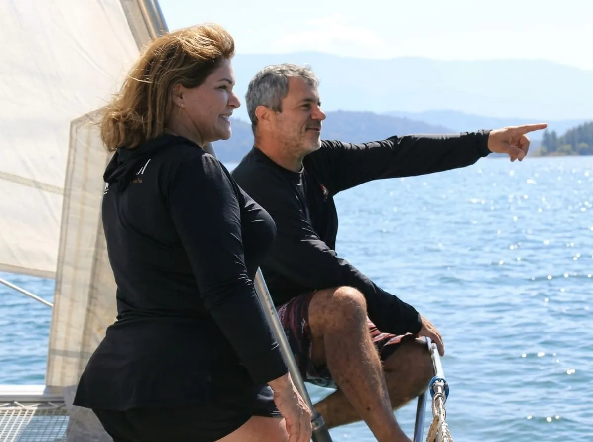

Descubra o paradisíaco arquipélago de San Blas a bordo de um Bavaria Yacht 39 pés. Uma experiência privativa, sofisticada e conduzida no seu ritmo em águas intocadas do Panamá.
Consultar Datas com o CapitãoNavegue entre ilhas intocadas com ancoragens tranquilas e atendimento 100% personalizado. Um charter exclusivo pensado para casais, famílias ou pequenos grupos de até 4 pessoas que desejam viver o Caribe de forma íntima e sofisticada.
Mais de 15 anos de experiência. Navegação profissional, segura e dedicada ao seu bem-estar.
Hospitalidade calorosa a bordo e alta gastronomia preparada com atenção a cada detalhe.

Mínimo de 2 pernoites (recomendado de 3 a 4 noites para imersão completa). Valores por noite em Dólar Americano (USD).
* Alta temporada (Dezembro a Fevereiro e Feriados Prolongados): valores sujeitos a ajuste de até 20% conforme demanda.
Saída às 05:00 da Cidade do Panamá em veículo 4x4 até o porto de Cartí, seguido de transporte em lancha nativa até o Veleiro Naboa (chegada entre 10:00 e 11:00).
USD 150 por pessoa (Ida e Volta)Voo privativo ou compartilhado de apenas 45 minutos da Cidade do Panamá pousando direto na pista da ilha de Coração de Jesus, bem ao lado do veleiro.
USD 180 a USD 250 por pessoa (Por trecho)Oferecemos uma experiência de San Blas sailing inteiramente privada e com sistema all-inclusive. Você e seu grupo terão o uso exclusivo do veleiro Naboa (Bavaria Yacht 39 pés), com tripulação dedicada (capitão e cozinheira), refeições completas, bebidas selecionadas e equipamentos de lazer inclusos.
Existem duas formas principais de transfer partindo da Cidade do Panamá: por via aérea (voo de 45 minutos em avioneta até Coração de Jesus, custando entre USD 180 e USD 250 por trecho por pessoa) ou via terrestre combinada com lancha (saída às 5h da manhã com chegada por volta das 10h-11h, custando USD 150 ida e volta por pessoa).
Para aproveitar ao máximo o arquipélago de San Blas no Panamá, operamos com um mínimo de 2 pernoites. No entanto, para vivenciar a verdadeira navegação em San Blas de forma relaxante e conhecer as ilhas mais intocadas, recomendamos uma estadia de 3 a 4 noites.
Sim, a região é uma comarca indígena autônoma (Guna Yala). Os visitantes devem pagar diretamente às autoridades locais a Taxa Guna Yala de USD 25 por pessoa e taxas locais de ilhas de USD 3 por pessoa. Esses valores não estão inclusos na diária do charter.
Entre em contato diretamente com o Capitão Marcelo para consultar o calendário de vagas e garantir as datas perfeitas para o seu grupo de forma exclusiva.
Falar com o Capitão no WhatsApp